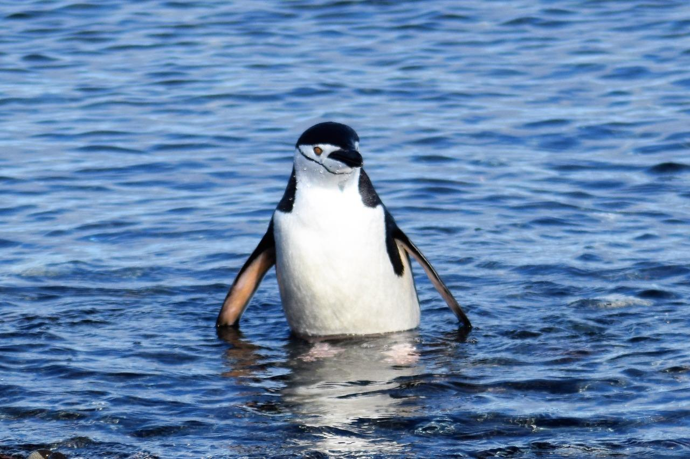
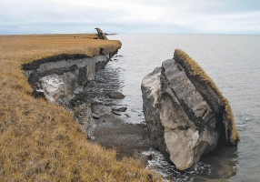

Polar ENgagement through GUided INquiry for High School
PENGUIN modules give High School students the opportunity to use powerful computational tools to work with
real-world data in the classroom, while learning about polar regions and climate change. The modules are at
the intersection with disciplinary skills in fields from Geosciences, to Economics, to Algebra.
PENGUIN modules
PENGUIN is an NSF-funded project to bring polar research and data into undergraduate classrooms. For
PENGUIN High, the modules have been modified for the High School level to provide an easy entry into
powerful computational tools.
Choose from Excel, Python, or R. Modules in Python and R are completed on an online platform, with no
downloading or prior coding experience required.


Sea Level Rise
Students learn how melting polar ice is leading to sea level rise and use cost-benefit analysis to
determine how high to build a wall in a coastal city to hold back the rising sea. (Excel)
Penguin Populations
Students learn about Adelie, Gentoo, and Chinstrap penguins and apply concepts in Algebra by fitting
straight lines to data on penguin breeding and population change. (Excel or Python)
Permafrost
Students learn what Permafrost is, why it is thawing, and why it matters for the Arctic. They
learn about how heat moves through a material and
calculate heat flux through Permafrost. (Python)
Acknowledgements
PENGUIN modules were created with funding from the National Science Foundation and are licensed
under the Creative Commons Copyright. You may freely use and share with attribution to the PENGUIN project as
follows:
Rowe, P.M. et al, Integrating polar research into undergraduate curricula using computational
guided inquiry, JGE, 2020. (link)
Penguin image by Stan Shebs, licensed under the Creative Commons Attribution-Share Alike 2.5
Generic license Pygoscelis Papua.